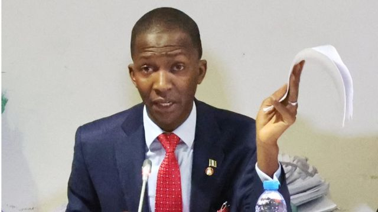

Abdulrasheed Bawa, chairman of the Economic and Financial Crimes Commission (EFCC), has asked Governor Bello Matawalle of Zamfara State to provide evidence of corruption against him
The anti-graft czar said this while responding to numerous allegations that the governor levelled against him.
In a statement he personally signed on Wednesday, governor accused Bawa of corruptly enriching himself while asking the anti -graft boss to excuse himself and surrender for investigation.
He appealed to the federal government to probe Bawa and the activities of the commission under him.
He had said: “I and some eminent Nigerians have evidence of corrupt practices, breach of public trust and abuse of office against him (Bawa) and the commission led by him.”
subsequently,, EFCC had said Matawalle was being investigated over allegations of corruption, award of phantom contracts and diversion of over N70 billion.
but, during an interview with BBC Hausa, Bawa said that it would be beneficial for Matawalle to provide supporting evidence for his allegations.
“There is no human being who is 100% clean, I read somewhere he (Matawalle) asked us to extend our investigation to ministers. We carry out our investigations thoroughly and if Governor Matawalle has knowledge of any minister or governor involved in corrupt practices, he should report it to the appropriate authorities.
“If he has records of my purported corrupt practices, the appropriate channels for redress would be through reporting to the police, ICPC, and the Code of Conduct. Subsequently, investigations into such complaints would ensue.” Bawa said it all.
NO BODY IS 100% PURE 